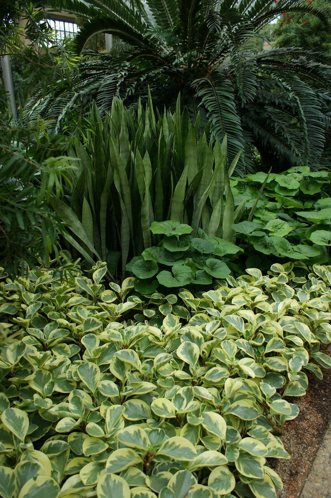
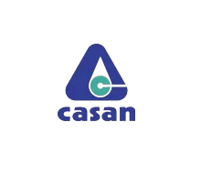
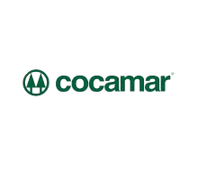
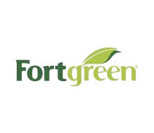
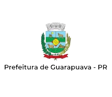
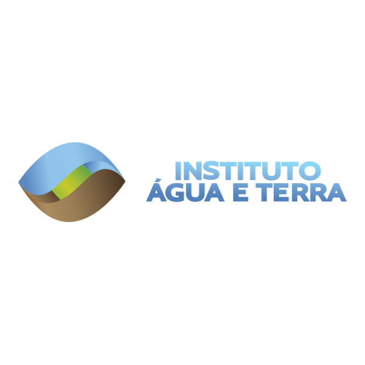
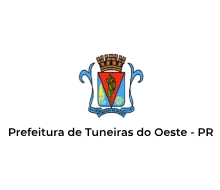
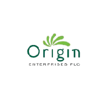
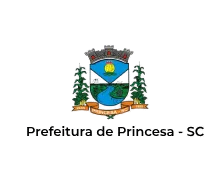
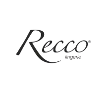

Regularize sua área com um projeto técnico desenvolvido para atender às exigências ambientais e recuperar o valor da sua propriedade.
Cada área possui características próprias. Por isso, realizamos um diagnóstico técnico completo para elaborar um PRAD (Plano de Recuperação de Áreas Degradadas ou Alteradas) compatível com a realidade do terreno, atendendo à legislação ambiental e às exigências dos órgãos competentes.
Solicitar Análise de Viabilidade Técnica
Os prejuízos de adiar a regularização: aumento de custos e travamento de novos processos ambientais.
Em muitos casos, somos procurados somente após o cliente receber uma notificação ou enfrentar dificuldades no licenciamento. Não realizar a regularização no momento certo gera prejuízos diretos ao seu negócio. Quanto mais cedo a situação for avaliada, maiores são as possibilidades de resolver o problema com planejamento, evitando multas e reduzindo o impacto financeiro.
Travamento de Negócios
Dificuldades e bloqueios em processos de licenciamento ambiental, regularizações, liberação de financiamentos e perda de negociações imobiliárias.
Prejuízos Financeiros e Ambientais
Processos erosivos aumentam, a degradação do solo se intensifica e nascentes podem ser comprometidas. Com o agravamento da situação, o custo para recuperar a área no futuro se torna muito maior.
Penalidades e Multas Legais
A ausência de recuperação da área impede o encerramento de processos administrativos, impossibilita a emissão de licenças e pode gerar ou agravar autos de infração (multas).
Um PRAD bem elaborado evita retrabalho, reduz riscos e aumenta as chances de aprovação.
O PRAD (Plano de Recuperação de Áreas Degradadas ou Alteradas) não deve ser tratado apenas como um documento obrigatório. Ele reúne estudos técnicos que orientam a recuperação da área degradada, atendendo às exigências legais e definindo as melhores soluções para cada situação. Nossa equipe acompanha todas as etapas, desde o levantamento em campo até a elaboração do projeto.
Diagnóstico
Levantamentos de campo, caracterização da vegetação e solo, e identificação das causas.
Plano de Ação
Elaboração do Plano e definição das técnicas mais adequadas para a recuperação.
Execução
Projetos de revegetação com espécies compatíveis e planejamento de controle de erosão.
Monitoramento
Acompanhamento técnico da recuperação quando necessário.
Como transformamos áreas degradadas em ambientes regularizados e seguros.
Acompanhamento prático e execução direta em campo para garantir o sucesso da recuperação.

01. Manejo de Solo e Plantio
Trabalho prático em campo com técnicas adequadas para o preparo do solo e a introdução de espécies nativas compatíveis com a área.

02. Tutoramento e Manutenção
Cuidado contínuo com as mudas plantadas, garantindo a sustentação, o controle do espaço e o desenvolvimento saudável da nova vegetação.

Paulo Gabriel Caleffi Guilhermeti
Engenheiro Ambiental | CREA: 140428-D
Quem assina o seu projeto também acompanha a realidade da área em campo.
Cada projeto começa com uma avaliação técnica detalhada da área. Nosso objetivo é desenvolver soluções compatíveis com a realidade do terreno e com as exigências dos órgãos ambientais. Esse acompanhamento próximo permite entregar projetos mais completos, reduzir retrabalhos e aumentar a segurança durante todo o processo.
- Atendimento direto com o engenheiro responsável.
- Projetos desenvolvidos conforme a realidade de cada área.
- Experiência em processos de regularização ambiental.
- Soluções para propriedades rurais, empresas e condomínios.
Sua propriedade possui alguma área que precisa de regularização ou laudo técnico?
Falar com Engenheiro Responsável
Projetos de jardinagem e paisagismo para valorizar residências, empresas e condomínios.
Um jardim bem planejado melhora a aparência do ambiente, facilita a manutenção e transmite organização. Atuamos desde a implantação até a manutenção periódica das áreas verdes, sempre considerando as características do espaço e os objetivos de cada cliente.
- Implantação, execução de jardins e paisagismo.
- Manutenção periódica de áreas verdes, corte de grama e limpeza.
- Podas de arbustos e árvores (quando tecnicamente permitidas).
- Controle de plantas invasoras e revitalização.
- Plantio de árvores, flores, espécies ornamentais e adubação.
Empresas que confiam em nosso trabalho









Tire suas dúvidas sobre Regularização e PRAD.
O que acontece se eu não entregar o PRAD no prazo?
O atraso pode acarretar em multas, embargos e travamento de novos licenciamentos junto aos órgãos fiscalizadores.
O PRAD serve para qualquer tipo de terreno?
Sim. O PRAD é adaptável, mas as técnicas variam rigorosamente de acordo com as características do solo, bioma e grau de degradação da área.
A Guairacá cuida da documentação junto aos órgãos ambientais?
Sim, oferecemos suporte técnico durante todo o trâmite administrativo, garantindo que o projeto atenda a todas as exigências legais e normas técnicas.